Hakodate
Hakodate · Hokkaido
Hakodate
Highlighted on the Hokkaido map.
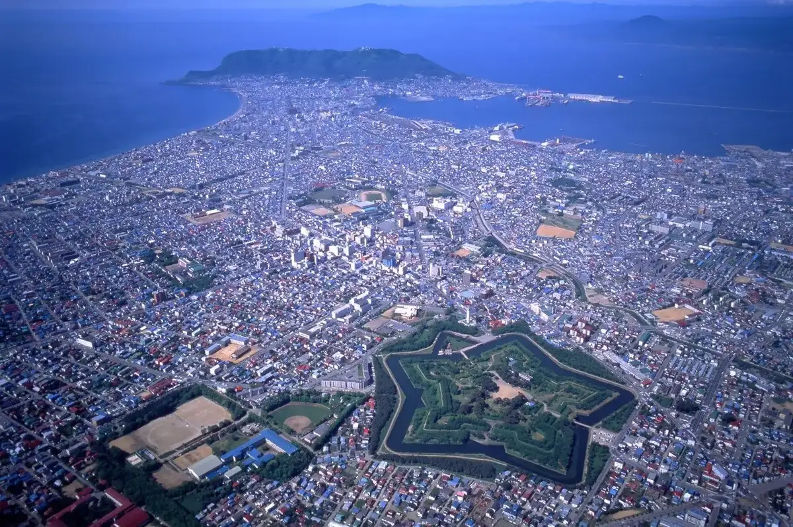
Stay
ホテル ハートイン函館
Hoteru Haatoin Hakodate
KODATEL函館大門
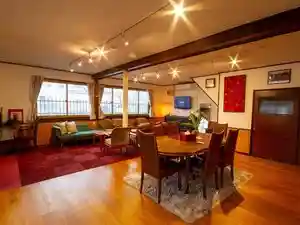
Kodatel Hakodate Daimon
東横ＩＮＮ函館駅前大門
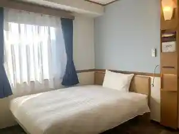
Touyoko I N N Hakodateeki Mae Daimon
ホテルリソル函館
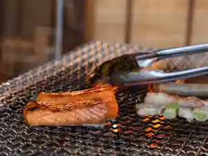
Hoterurisoru Hakodate
コンドミニアム ステラサイト
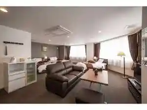
Kondominiamu Suterasaito
アパホテル〈函館駅前〉
Apahoteru < Hakodateeki Mae >
コンフォートホテル函館
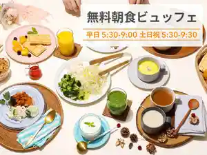
Konfootohoteru Hakodate
ゲストハウス ＨＡＫＯＤＡＴＥ ベイ
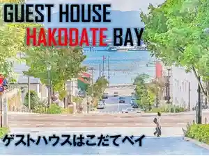
Gesutohausu H A K O D A T E Bei
fav 函館
Fav Hakodate
KODATEL函館シーサイド
Kodatel Hakodate Shiisaido
フォーポイント フレックス by シェラトン 函館駅
Foopointo Furekkusu By Shieraton Hakodateeki
ホテル函館ロイヤル シーサイド (BBHホテルグループ)
Hoteru Hakodate Roiyaru Shiisaido (Bbh Hoteruguruupu )
Dining
やきとりおでんの寿楽
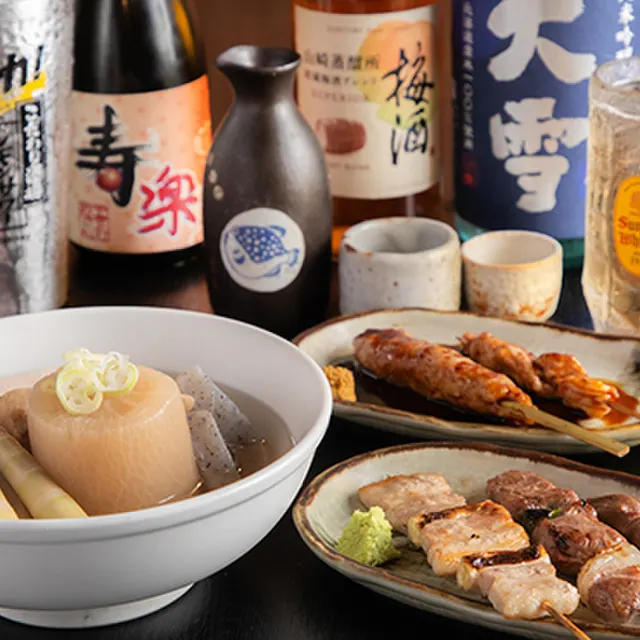
Yakitoriodenno Hisashi Raku
旬味 鹿六
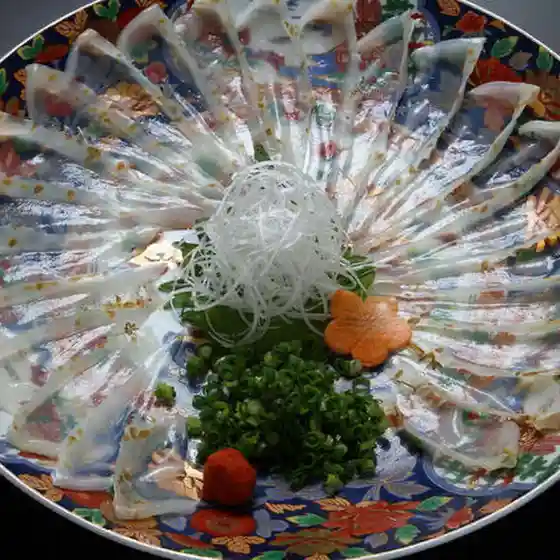
Jun Aji Shika Roku
居酒屋 北の鬼遺産 函館駅前店
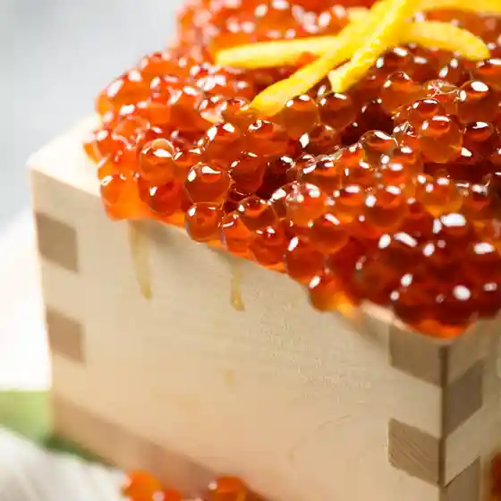
Izakaya Kita No Oni Isan Hakodateeki Mae Mise
いか太郎 総本店
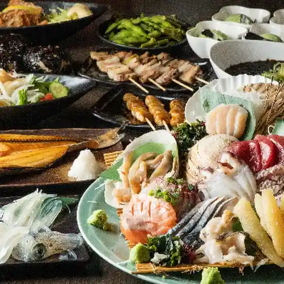
Ika Tarou Souhonten
山の猿 函館昭和店
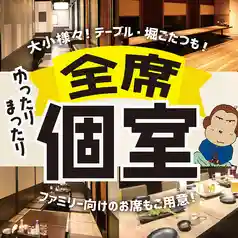
Yama No Saru Hakodate Shouwa Mise
竹葉新葉亭
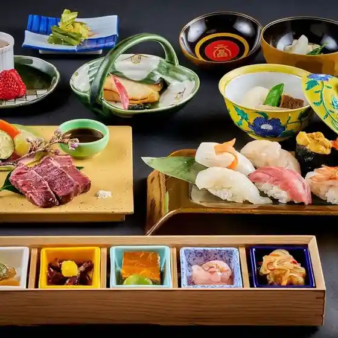
Chikuha Shinba Tei
函館海鮮居酒屋 魚まさ 五稜郭総本店
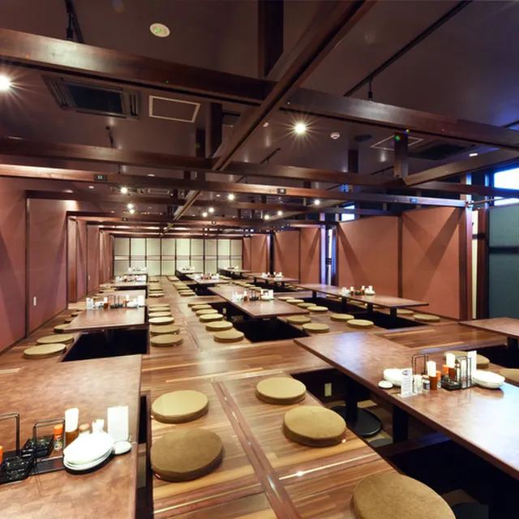
Hakodate Kaisen Izakaya Sakana Masa Goryoukaku Souhonten
箱館居酒屋 熾美
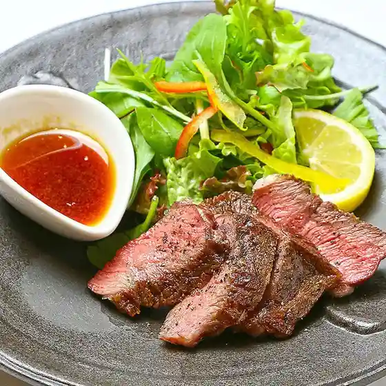
Hakodate Izakaya Shi Bi
ステーキ・海鮮 鉄板焼 北風
Suteeki Kaisen Teppanyaki Kitakaze
牛乃家 函館美原店
Ushi No Ie Hakodate Mihara Mise
寿司とＹシャツとお肉 あるて
Sushi To Y Shatsu Too Niku Arute
すし蔵
Sushi Kura
居酒屋 勇旬 いか太郎 本店
Izakaya Isami Jun Ika Tarou Honten
炭火ジンギスカン おおたか 本店
Sumibi Jingisukan Ootaka Honten
串カツ田中 函館五稜郭店
Kushi Katsu Tanaka Hakodate Goryoukaku Mise
函館ダイニング雅家 ベイエリア店
Hakodate Dainingu Masa Ie Beieria Mise
そば処ふでむら 五稜郭店
Soba Tokoro Fudemura Goryoukaku Mise
函館活鮮居酒屋 魚和
Hakodate Katsu Sen Izakaya Sakana Wa
海鮮居酒屋 莉里
Kaisen Izakaya Riri
ジンギスカン えいじん 函館店
Jingisukan Eijin Hakodate Mise
炭火居酒屋 炎 函館美原店
Sumibi Izakaya Honoo Hakodate Mihara Mise
海鮮料理と釜めし あらき
Kaisen Ryouri To Kama Meshi Araki
掬～OWE～
Mari ~ Owe ~
とりの介 函館五稜郭店
Torino Suke Hakodate Goryoukaku Mise
Sights
Tokubetsu Shiseki Goryokaku Historic Site
Tokubetsu Shiseki Goryokaku Historic Site
Hakodate Jomombunka Koryu Center (Kokuho Chuku Dogu)
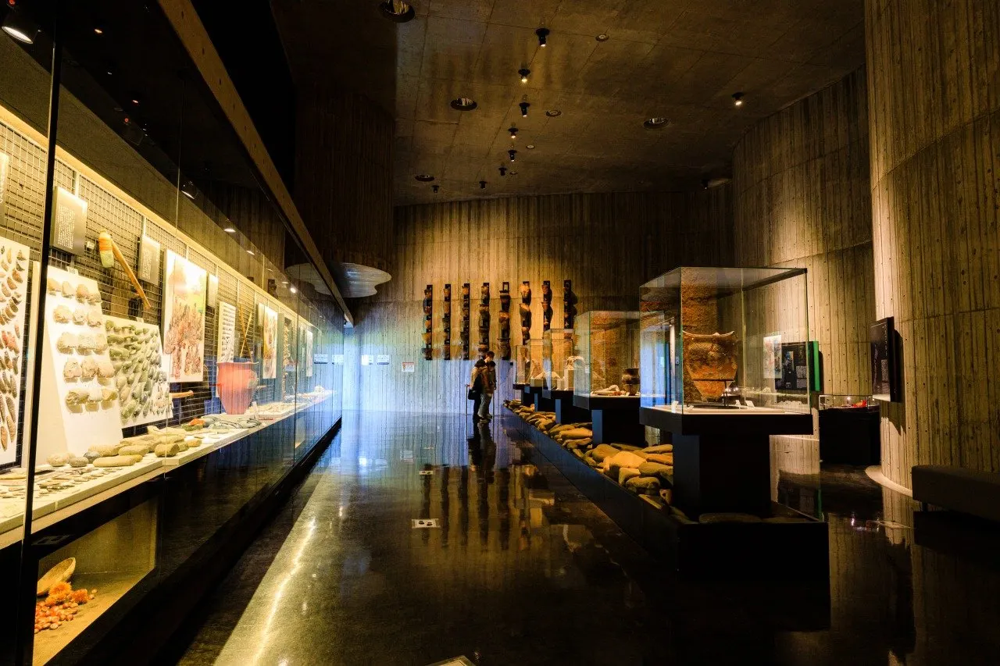
Hakodate Jomombunka Koryu Center (Kokuho Chuku Dogu)